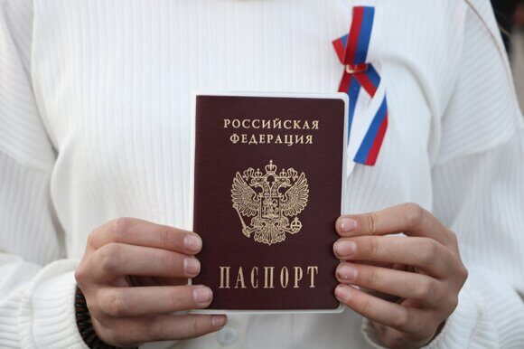

« НазадПолучение паспорта раньше 14 лет - разбираем законодательные нюансы Паспорт гражданина Российской Федерации – ключевой документ, подтверждающий личность и гражданство страны. Этот документ играет важнейшую роль не только для идентификации личности, но и для взаимодействия с государственными органами, получения социальных услуг и участия в различных жизненных процессах. В настоящее время вопросы досрочного получения паспорта остаются актуальными, особенно если речь идёт о подростках. В статье мы разберём нормативно-правовую базу, особенности оформления, случаи, когда возможен досрочный выпуск, а также рекомендации для родителей и подростков, столкнувшихся с этим вопросом. Значение паспорта как основного документа, удостоверяющего личностьПаспорт является основным удостоверяющим документом гражданина РФ. Он подтверждает не только личность, но и гражданство, связь с государством и правовой статус человека. Без паспорта невозможно:
Таким образом, своевременное оформление паспорта является важным этапом становления гражданской ответственности и доступа к жизненно важным услугам. Нормативно-правовая базаВопросы, связанные с выдачей паспортов, регулируются рядом законодательных актов, в том числе:
Эти документы устанавливают как сроки, так и порядок оформления паспорта, что позволяет обеспечить единообразное и законное решение вопросов досрочного получения документа. На сегодняшний день в законодательстве отсутствуют нормы, позволяющие получить паспорт гражданина РФ до наступления установленного срока за исключением отдельных случаев, подробно описанных ниже. Общие положения о получении паспорта в 14 летПорядок оформления первого паспорта для граждан России регламентирован довольно строго. По общепринятой практике выдача паспорта начинается по достижении 14-летнего возраста. При этом родитель или законный представитель обязаны контролировать сроки подачи заявления, так как просрочка может привести к административной ответственности. При оформлении первого паспорта важно учитывать, что данный документ является свидетельством гражданской идентичности. Он содержит подлинные данные о владельце, такие как имя, дата рождения, место жительства и идентификационный номер, что весьма важно для дальнейшего взаимодействия с государственными и коммерческими структурами. Возрастной ценз для получения первого паспортаНормативно установленный возраст, с которого возможна подача заявления на получение первого паспорта – 14 лет. В некоторых случаях родители могут инициировать процесс в статусе законных представителей заранее, но сам документ оформляется только после достижения указанного возраста. Специфика такого подхода обусловлена защитой персональных данных несовершеннолетних и соблюдением установленных законодательных процедур. Ответственность за несвоевременное оформление паспортаВ случае, если паспорт не оформляется в установленный срок, о том, что многие родители могут забыть или задержать процедуру, предусмотрена административная ответственность за нарушение сроков. Согласно нормам, подросток лишается возможности пользоваться документом, что может создать препятствия при:
Несвоевременное оформление паспорта также может негативно сказаться на истории гражданина, особенно при оформлении других документов, где требуется наличие актуального паспорта. Возможность досрочного получения паспортаПринимая во внимание строгость законодательства, вопросы досрочного получения паспорта остаются дискуссионными. Согласно действующим нормам, получение паспорта до достижения 14-летнего возраста не предусмотрено законодательством. Однако существует категория исключительных случаев, когда допускается ускоренное оформление документа. Обычно такие случаи связаны с необходимостью подтверждения гражданства посредством паспорта по семейным обстоятельствам, обучению или медицинским требованиям. Официальная позиция законодательстваЗаконодательство Российский Федерации чётко определяет возраст получения первого паспорта. На официальном уровне документы указывают, что паспорт можно получить с 14 лет, и исключения возможны лишь на основании специальных нормативных актов или рекомендаций компетентных органов. До сих пор ни одно изменение в законодательстве не допускало систематического досрочного оформления, поскольку это может повлечь за собой вопросы защиты персональных данных несовершеннолетних. Исключения и особые случаиСуществуют редкие случаи, когда досрочное оформление паспорта может быть рассмотрено:
Однако на практике подобные исключения оформляются индивидуально и требуют представления обоснованных доказательств необходимости досрочного получения паспорта. Процедура оформления паспортаОформление паспорта – процесс, требующий соблюдения определенных этапов. Рассмотрим основные шаги, необходимые для успешного прохождения процедуры. Необходимые документыДля оформления паспорта гражданина РФ в 14 лет потребуется собрать следующий пакет документов:
Важно внимательно проверить список документов в местном отделении МВД, поскольку требования могут незначительно отличаться в зависимости от региона. Порядок подачи заявленияОбычно заявление подается лично родителем или законным представителем ребенка. Порядок подачи включает следующие этапы:
Каждый из этапов следует выполнять согласно инструкции, чтобы избежать ошибок, приводящих к задержке процедуры. Сроки изготовления паспортаСрок изготовления паспорта зависит от загруженности отделения МВД и конкретной ситуации. В среднем стандартный срок составляет от 5 до 30 дней. В некоторых случаях (при наличии особенностей оформления или необходимости досрочного рассмотрения) сроки могут изменяться. Важно учитывать, что досрочное получение паспорта не означает сокращение сроков изготовления, а касается лишь возможности подачи заявления до достижения 14-летнего возраста, что на практике не поддерживается официальными рекомендациями. Ответы на часто задаваемые вопросыНиже приводится ответы на наиболее распространённые вопросы, связанные с процессом оформления паспорта гражданина РФ в подростковом возрасте. Можно ли получить паспорт в 13 лет? Нет, паспорт гражданина РФ выдается с 14-летнего возраста, хотя родитель может подготовить документы заранее. Какие документы нужны для оформления паспорта в 14 лет? Требуются: свидетельство о рождении, регистрация по месту жительства, фотографии установленного образца, паспорт родителя и заполненное заявление. Что делать, если до 14 лет не хватает нескольких месяцев? Оформление паспорта возможно только после достижения установленного возраста, поэтому важно заранее подготовить все документы, чтобы быть готовыми сразу после дня рождения. Можно ли ускорить процесс получения паспорта? Обычно процедуру ускорить нельзя, но в исключительных случаях (например, срочное зарубежное обучение) возможно обращение за индивидуальным рассмотрением. Какие причины могут служить основанием для досрочного оформления паспорта? Исключительными основаниями могут быть форс-мажорные семейные обстоятельства, медицинские показания или участие в международных образовательных программах. Что делать, если ребенок учится в другом городе? В таких случаях родители должны обратиться в отделение МВД по месту прописки и следовать инструкциям, возможно, потребуется дополнительное подтверждение обучения. Куда обращаться за оформлением паспорта? Основной орган – территориальное отделение МВД, ответственное за паспортный стол региона проживания. Какова стоимость оформления паспорта? Стоимость зависит от региона, но государственная пошлина для оформления первого паспорта обычно составляет установленную законом сумму в 300 рублей. Какие фотографии нужны для паспорта? Необходимо предоставить две фотографию установленного образца, соответствующей требованиям к размеру и качеству изображения. Что делать, если ребенок болеет перед 14-летием? В случае болезни рекомендуется согласовать порядок оформления паспорта с лечащим врачом и отделением МВД, при необходимости предоставить медицинские справки. Можно ли получить временное удостоверение личности? В некоторых случаях при невозможности получения постоянного паспорта выдается временное удостоверение личности, но это происходит по решению уполномоченного органа. Что делать, если потерял свидетельство о рождении? Для оформления паспорта необходимо обратиться в органы ЗАГС или Многофункциональные центры для восстановления утраченного документа. Кто должен присутствовать при подаче документов? Заявление подают родители или законный представитель, при этом участие ребенка обязательно требуется, он должен находиться в курсе процедуры. Какие могут быть основания для отказа в выдаче паспорта? Основания могут включать отсутствие необходимых документов, ошибки в бланке заявления или наличие несоответствий, выявленных проверяющими органами. Что делать, если ребенок находится за границей? В таком случае процедура оформления производится через консульские учреждения или посольства РФ, с учетом дополнительных требований. Как проверить готовность паспорта? Готовность паспорта можно проверить через официальный сайт МВД или позвонив на горячую линию соответствующего отделения. Можно ли забрать паспорт родителям? Паспорт оформляется на имя ребенка, однако родители могут получить его в качестве лиц, ответственных за процедуру оформления при наличии доверенности. Какие права дает первый паспорт? Первый паспорт подтверждает гражданство, позволяет пользоваться правами гражданина, участвовать в гражданской жизни и является базовым документом для оформления всех последующих документов. Советы и рекомендацииПодготовка к оформлению паспортаРекомендуется начать сбор документов заблаговременно. Подготовка включает:
Рекомендации по заполнению заявленияПри заполнении заявления важно соблюдать следующие рекомендации:
Советы по сбору документовДля минимизации ошибок:
Как избежать распространенных ошибокНаиболее частыми ошибками являются:
Планомерный сбор документов и консультация с представителями МВД позволяют избежать этих сложностей. Особые случаи оформления паспортаВ некоторых случаях, когда возникает необходимость досрочного оформления по медицинским или образовательным причинам, родителям удается добиться индивидуального рассмотрения заявления. Однако такие случаи редки и требуют дополнительного обоснования, подтверждения необходимости и, иногда, судебного вмешательства. Правовые аспектыОтветственность за нарушение сроков оформления паспортаНесоблюдение установленных законом сроков может повлечь административную ответственность. Это особенно важно, если задержка оформления паспорта негативно отразилась на использовании социальных услуг или образовательных прав ребенка. Ответственность возлагается на родителей или законных представителей, поэтому важно планировать процесс заблаговременно. Права и обязанности при оформлении паспортаПроцедура оформления паспорта требует соблюдения взаимных прав и обязанностей:
Соблюдение всех правовых норм позволяет обеспечить защиту интересов как несовершеннолетнего, так и государства. ЗаключениеОформление паспорта гражданина РФ является важным этапом в жизни каждого гражданина, а своевременное получение документа обеспечивает возможность полноценного использования социальных, образовательных и медицинских услуг. Строгая нормативно-правовая база и установленные процедуры гарантируют, что получение паспорта происходит законно и прозрачно. Несмотря на многочисленные вопросы, касающиеся досрочного оформления паспорта, официальная позиция законодательства однозначна – документ выдается с 14 лет, и исключения возможны лишь в редких случаях, когда возникают особые жизненные ситуации. Общие рекомендацииОсновные рекомендации для родителей и законных представителей таковы:
Подготовка и внимательное отношение к процедуре оформления паспорта позволят избежать ненужных задержек и проблем, связанных с идентификацией личности. Получение паспорта – это не просто административная процедура, а важный этап формирования гражданской ответственности. Родители должны позаботиться о том, чтобы их ребенок получил все необходимые документы в срок, что откроет двери к множеству возможностей в будущем. От своевременного оформления паспорта зависит не только личная безопасность, но и возможность легкого доступа к государственным услугам, образовательным программам и трудоустройству. В заключении хочется отметить, что соблюдение всех этапов оформления паспорта – от подготовки документов до проверки готовности – является залогом успешного прохождения процедуры. Информированность, внимательность и активное сотрудничество с государственными органами помогут родителям и подросткам справиться с любыми сложностями, возникающими на пути к получению паспорта гражданина РФ. Срочное оформление паспорта для вашего 14-летнего ребенка – быстро и надежно!В Паспортно-визовом центре «Север» мы предлагаем срочное оформление внутреннего паспорта РФ для 14-летних детей с гарантией срочности, надежности и высокого качества сервиса. Более 25 лет опыта, удобное расположение в центре Москвы и индивидуальный подход к каждому клиенту – все это делает нас вашим надежным партнером в решении важных вопросов. Обратитесь к нам уже сегодня, и мы позаботимся о том, чтобы ваш ребенок получил паспорт вовремя и без лишних проблем. Позвоните по номеру +79255854195 и убедитесь, что профессиональная помощь по оформлению документов находится на расстоянии одного звонка!
|
Комментарии
Комментариев пока нет